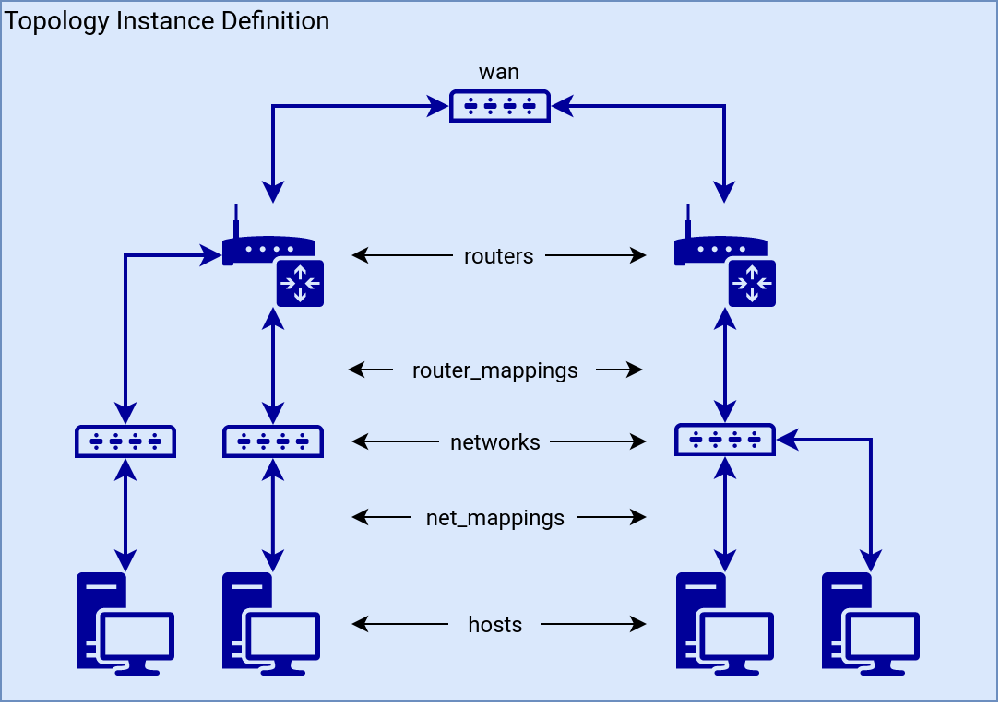

Topology Definition
Topology Definition is used for the description of Topology Instance. See the following image to help you visualize what you can define in the topology definition.

Attributes#
Attributes of a Topology Definition (an example).
name#
Defines the name of the definition (name restrictions).
hosts#
Hosts contains the list of end hosts to be deployed. A host has the following attributes.
- name: name of end host VM (names restriction, unique names restriction)
- flavor: name of flavor (see how to chose flavor)
- base_box: (see how to define base_box)
- image: name of image
- mgmt_user: name of user with sudo privileges
- mgmt_protocol (optional): protocol used for communication with base_box instance. supported options are
sshandwinrm(default:ssh)
- hidden (optional): whether the host should be hidden in a topology visualization (default:
False) - volumes (optional): list of volumes that will be provisioned on the host in the format
- size: X, where X is volume size in GB. The first volume will be used as a system drive - the author of the definition utilizing this parameter has to determine how much space the image itself requires to run. - extra (optional): a map used for defining extra values for the host, has no additional effect.
routers#
The list of routers. Routers are the only nodes through which hosts can communicate with the internet or hosts in networks connected to different Routers. Every router should be connected to some networks. A connection can be achieved by router_mappings. A router has the following attributes.
- name: name of router VM (names restriction, unique names restriction)
- flavor: name of flavor (see how to chose flavor)
- base_box: (see how to define base_box)
- image: name of image
- mgmt_user: name of user with sudo privileges
- mgmt_protocol (optional): protocol used for communication with base_box instance. supported options are
sshandwinrm(default:ssh)
- extra (optional): a map used for defining extra values for the router, has no additional effect.
-
hidden (optional): whether the router and its networks and hosts should be hidden in a topology visualization (default:
False)Note
A router’s cidr attribute has been deprecated since version 21.12.
wan#
A special network that routers uses to communicate with each other and the Internet. Routers are assigned to this network automatically.
- name: name of the network (default:
wan, names restriction, unique names restriction) - cidr: IP address range in CIDR notation (default:
100.100.100.0/24, unique cidrs restriction)
networks#
The list of networks. A network is used to connect the router with the end host. It has the following attributes.
- name: name of network (names restriction, unique names restriction)
- cidr: IP address range in CIDR notation (unique cidrs restriction)
- accessible_by_user: optional attribute, specifies which networks will be accessible by user (default:
True), applies to the all hosts of a network - hidden (optional): whether the network and its hosts should be hidden in a topology visualization (default:
False)
net_mappings#
The list of net_mappings. A net_mapping is used to connect the host to the network. Each host should be connected to one network (more are possible but not recommended). A net_mapping has the following attributes.
- host: name of host defined in hosts
- network: name of the network defined in networks
- ip: IP address for the host, must be from IP address range of the network address restriction
router_mappings#
The list of router_mappings. A router_mapping is used to connect the router to the network. Each network should be connected to one router, but one router can be connected to multiple networks. A router_mapping has the following attributes.
- router: name of router defined in routers
- network: name of network defined in networks
- ip: IP address for the router, must be from IP address range of the network address restriction
groups#
The list of groups. An ansible group is used for better management of nodes. It has the following attributes.
The following group names are reserved for monitoring - monitor-os (monitoring of Operating System), monitor-icmp (network availability monitoring on management interface).
monitoring_targets#
List of monitoring targets with TCP ports and interfaces to monitor. A monitoring_target has the following attributes.
- node: name of host or router defined in hosts or routers
- targets: list of TCP ports and interfaces to monitor in the following format.
- port: TCP port to monitor
- interface: network interface to monitor
Glossary#
Base_box#
Base_box specifies the image of the node boot disk, default user mgmt_user with sudo permissions, and a protocol that is needed to communicate with the machine.
The table below contains some examples of possible base_box options.
| image | user |
|---|---|
| centos-8 | centos |
| cirros-0-x86_64 | cirros |
| debian-12-x86_64 | debian |
| kali-2020.4 | debian |
| ubuntu-noble-x86_64 | ubuntu |
| windows-10 | windows |
| windows-server-2019 | windows |
Warning
The actual base_box options may differ from the contents of this table. Before using an image, check that it is present in the list of OpenStack images (How to list OpenStack images)
Note
It is strongly recommended to use the debian-12-x86_64 or ubuntu-noble-x86_64 images for routers.
Flavor#
Flavor defines virtual machine hardware parameters (VCPUs, RAM, Disk size).
The following flavors can be deployed using the CyberRangeCZ Platform deployment tools.
Warning
In the case of using a public cloud provider (flavors cannot be created without admin rights), the flavors in the topology definition must be replaced by the available flavors of that provider.
| flavor | vCPU | RAM (GB) | disk size (GB) |
|---|---|---|---|
| standard.small | 1 | 2 | 80 |
| standard.medium | 1 | 4 | 80 |
| standard.large | 2 | 16 | 80 |
Restrictions#
Names#
All names should have only characters: a-z, A-Z, 1-9, and -, and the first character should be a lower case letter.
Unique Names#
Names of hosts, networks, and routers should be unique in the context of a Topology Definition (they are used for instance identification).
Disjunct CIDRs#
Networks, including wan, should be disjunct (not overlapping), and in network_mappings and router_mappings IP address should be from the IP address range of the network. Otherwise, networking wouldn’t work.
Networks, including wan, shouldn’t overlap with management network’s CIDR either.
Address Restriction#
During a network creation, the OpenStack will take the first IP address of the specified IP address range for a gateway (a Router), the second IP address for DHCP, and the rest for hosts. The OpenStack will non-deterministically take the first address of the network or the first address after a gateway (a Router) address, and if any of net_mappings has an IP address set to one of these addresses, sandbox creation may fail.
Group Restriction#
Sandbox service does not allow the redefinition of its default hosts groups. Thus, the Topology Definition in which these groups are defined is invalid.
Example#
An example topology definition in the sandbox definition with the name small-sandbox contains the following.
- Two hosts. The host server will not be visible in the topology.
- Two routers.
- The wan network with a custom name.
- Two networks. Only one is user-accessible and therefore connected to the UAN node.
- One group, which contains two nodes.
name: small-sandbox
hosts:
- name: server
base_box:
image: debian-12-x86_64
mgmt_user: debian
flavor: standard.small
hidden: True
volumes:
- size: 16
- size: 2
- size: 9
- name: home
base_box:
image: windows-10-0.2.0
mgmt_user: windows
mgmt_protocol: wirm
flavor: standard.small
routers:
- name: server-router
base_box:
image: debian-12-x86_64
mgmt_user: debian
flavor: standard.small
- name: home-router
base_box:
image: debian-12-x86_64
mgmt_user: debian
flavor: standard.small
wan:
name: internet-connection
cidr: 100.100.100.0/24
networks:
- name: server-switch
cidr: 10.10.20.0/24
accessible_by_user: False
- name: home-switch
cidr: 10.10.30.0/24
net_mappings:
- host: server
network: server-switch
ip: 10.10.20.5
- host: home
network: home-switch
ip: 10.10.30.5
router_mappings:
- router: server-router
network: server-switch
ip: 10.10.20.1
- router: home-router
network: home-switch
ip: 10.10.30.1
groups:
- name: custom-group
nodes:
- home
- home-router